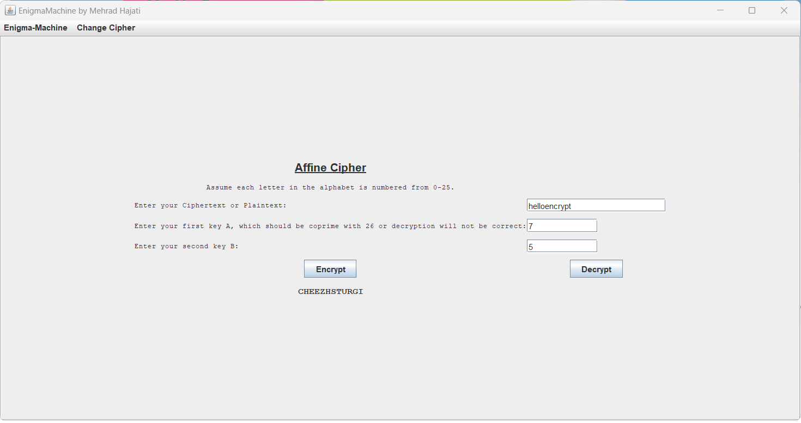
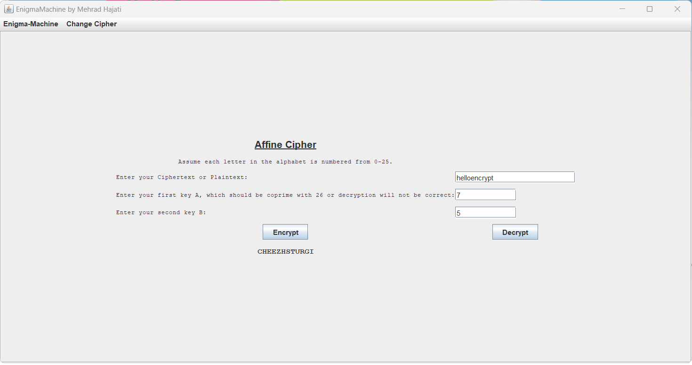

Qwirkle
Qwirkle is a board game played with different shaped and colored tiles, each tile has rules of where it can be placed. I turned it into a computer game that can be played over the browser by multiple people. In order to complete this project, I learned JavaScript, HTML, Gradle, and React independently using online resources. The source code can be found in this repository:
QwirkleEnigma Machine
One of my favorite courses during my bachelors degree was Cryptography. I found classical ciphers simple yet effective and was amazed how modern ciphers draw ideas from them to protect our data. I decided to follow my passion for classical ciphers and created the “Enigma Machine”, using the AWT and Swing packages. The Enigma Machine is a graphic user interface that explains how classical ciphers work and allows the user to enter ciphertexts or plaintexts along with appropriate keys to decrypt or encrypt them. Currently, it can encrypt and decrypt eleven ciphers. I decided on an MVC structure with this project as I found it intuitive to use and implement. The source code can be found in this repository:
Enigma MachineMandelbrot GUI
The Mandelbrot set is two dimensional set with a relatively simple definition but great complexity as it is magnified. This project is a Graphic User Interface that allows the user to zoom in and out viewing the Mandelbrot set and its beautiful complexities. I used JavaFX to create this GUI and the code can be viewed in this repository:
MandelbrotSpace Cats Fight Fascism
In this game players can choose many characters with different abilities and can move from to different planets, completing planet specific objectives. I turned this board game into a terminal-based computer game. This project taught me the fundementals of Object-Oriented design, how to construct MVC structures, and how to test my code in JUnit. The source code can be found in this repository:
Space Cats 
